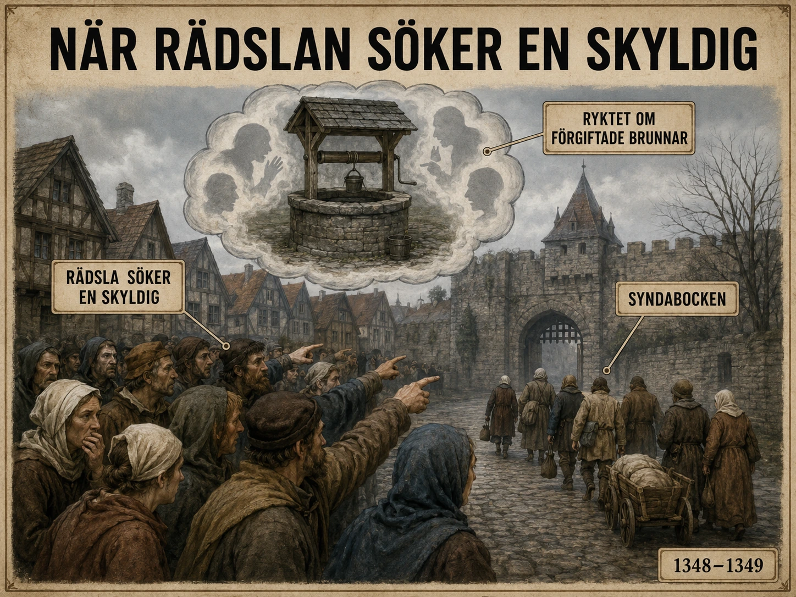

En medicinsk katastrof — och en moralisk
När digerdöden drog in över Europa på 1300-talet var det inte bara en medicinsk katastrof. Det blev också en social och moralisk katastrof. Människor dog i en takt som nästan ingen tidigare hade upplevt. Familjer splittrades. Byar tömdes. Präster, läkare och myndigheter stod ofta maktlösa. Ingen visste säkert vad sjukdomen berodde på.
I dag vet vi att pesten spreds genom bakterien Yersinia pestis, framför allt via loppor som levde på råttor och andra gnagare, men också genom direkt smitta vid lungpest. Men för människorna på 1300-talet fanns inga mikroskop, ingen bakterieteori och ingen modern smittskyddskunskap.
När rädslan söker ett ansikte
När människor drabbas av något fruktansvärt som de inte kan förstå, söker de ofta efter en förklaring. Det gäller inte bara medeltiden. Det gäller människor i alla tider. Problemet är att förklaringen ibland inte bygger på kunskap, utan på rädsla. Och när rädslan blir tillräckligt stark kan den riktas mot en grupp människor. Då uppstår syndabockstänkande.
En syndabock är någon som får skulden för något som egentligen har andra orsaker. Begreppet kommer från en gammal religiös föreställning där folkets synder symboliskt lades på en get, som sedan drevs ut i öknen. I historien har syndabocken ofta varit en redan utsatt grupp: människor som är annorlunda, som har en annan religion, ett annat språk, andra seder eller som lever i utkanten av majoritetssamhället. Under digerdöden blev Europas judar en sådan grupp.
Judarnas plats i medeltidens städer
Judar hade levt i många europeiska städer under medeltiden. De var en religiös minoritet i ett kristet samhälle. De hade ofta egna församlingar, egna religiösa regler och ibland egna kvarter. Samtidigt var de en del av stadens ekonomi. Många judar arbetade som hantverkare, läkare, köpmän eller penningutlånare.
Att vissa judar blev penningutlånare berodde delvis på att kristna regler länge förbjöd eller begränsade ränta mellan kristna. Judar pressades därför in i en ekonomisk roll som majoritetssamhället både behövde och föraktade. Det skapade en farlig dubbelhet: judar kunde vara nödvändiga för stadens ekonomi, men samtidigt misstänkliggjorda.
Redan före digerdöden fanns antijudiska föreställningar i Europa. Judar anklagades ibland falskt för att ligga bakom olyckor, sjukdomar eller religiösa brott. Dessa anklagelser byggde inte på bevis, utan på fördomar. När pesten kom blev den gamla misstänksamheten dödlig.

Myten om förgiftade brunnar
En av de mest spridda myterna var att judar hade förgiftat brunnar. Tanken var att pesten spreds genom dricksvattnet och att judar medvetet hade lagt gift i stadens brunnar för att döda kristna. Detta var helt falskt. Men myten spreds snabbt, eftersom den gav människor en tydlig fiende. I stället för att försöka förstå en osynlig sjukdom kunde man peka ut en synlig grupp.
Mekanismen i fyra steg
Det är viktigt att förstå hur syndabockstänkande fungerar:
Först kommer krisen. Något hotar samhället: sjukdom, krig, ekonomisk kollaps eller naturkatastrof.
Sedan kommer osäkerheten. Människor känner att världen inte längre går att kontrollera.
Därefter uppstår rykten. Någon sägs ha gjort något. Någon grupp sägs ligga bakom.
Till sist kan ryktena bli till våld, särskilt om myndigheter, präster eller lokala ledare inte stoppar dem — eller om de själva deltar.
1348–1349: pogromerna
Under åren 1348–1349 drabbades många judiska samhällen i Europa av pogromer. En pogrom är ett våldsamt angrepp mot en folkgrupp, ofta med plundring, misshandel, mord och förstörda hem eller religiösa byggnader.
Särskilt allvarliga förföljelser skedde i områden längs Rhen, i dagens Tyskland och Frankrike. Judiska församlingar i städer som Mainz, Köln, Worms och Speyer utsattes för våld eller hot. En av de mest kända händelserna inträffade i Strasbourg år 1349. Där dödades ett mycket stort antal judar efter anklagelser kopplade till pesten — trots att själva pesten ännu inte hade slagit till med full kraft i staden.
Det visar hur starkt ryktet kunde vara: människor kunde dödas inte för vad som hade hänt, utan för vad andra fruktade skulle hända.
När logik inte räcker
I vissa fall försökte furstar, biskopar eller påvar skydda judarna. Påven Clemens VI fördömde anklagelserna om brunnsförgiftning och påpekade att även judar dog i pesten. Det borde ha varit ett enkelt argument: om judarna själva dog av sjukdomen var det orimligt att påstå att de låg bakom den.
Men i en tid av panik räckte inte logik alltid. Rädsla kan göra människor döva för bevis.
Ekonomi blandas in i hatet
Det fanns också ekonomiska motiv bakom förföljelserna. Om judiska långivare dödades eller drevs bort kunde skulder försvinna. Hus, egendomar och pengar kunde beslagtas. Det betyder inte att alla som deltog i våldet tänkte ekonomiskt. Men historiker ser ofta att religiösa anklagelser, rädsla och ekonomiskt intresse blandades.
Pesten blev en möjlighet för vissa att göra sig av med skulder eller ta över egendom. Det gör förföljelserna ännu mörkare: krisen skapade både panik och möjlighet till plundring.
Ett mönster som återkommer
För elever i dag kan detta vara svårt att läsa om, men det är en viktig del av historien. Digerdöden visar inte bara hur farlig en sjukdom kan vara. Den visar också hur farligt ett samhälle kan bli när rädsla kombineras med fördomar. När människor inte förstår orsaken till en kris kan de börja leta efter skyldiga i stället för förklaringar.
Mönstret har återkommit många gånger i historien. Vid epidemier har minoriteter ofta anklagats för att sprida sjukdom. Vid ekonomiska kriser har vissa grupper pekats ut som giriga, främmande eller illojala. Vid krig har människor som redan betraktats som annorlunda anklagats för att vara förrädare. Det betyder inte att alla tider är likadana, men mekanismen känns igen: rädsla söker ett ansikte.
Avhumanisering — det farligaste ordet
Det viktigaste historiska begreppet här är inte bara "förföljelse", utan avhumanisering. När en grupp människor börjar beskrivas som farlig, oren, ond eller som ett hot mot samhällets överlevnad blir det lättare för andra att behandla dem illa.
Våldet börjar ofta inte med vapen, utan med ord, rykten och bilder. Först påstås gruppen vara skyldig. Sedan sägs den vara farlig. Till sist kan våldet framställas som självförsvar. Den som lär sig känna igen detta mönster har en chans att stå emot det.
När samhällen prövas
Digerdödens judeförföljelser visar därför något större än en medeltida tragedi. De visar hur samhällen kan misslyckas moraliskt mitt i en katastrof. En kris prövar inte bara läkekonst och myndigheter. Den prövar också människors förmåga att hålla fast vid rättvisa, även när de är rädda.
För oss i dag blir frågan: vad gör vi när samhället drabbas av kris? Söker vi kunskap, eller söker vi någon att skylla på? Lyssnar vi på rykten, eller kräver vi bevis? Skyddar vi utsatta grupper, eller låter vi rädslan riktas mot dem?
Det är därför denna del av digerdödens historia fortfarande är så viktig. Den handlar inte bara om medeltiden. Den handlar om hur lätt människor kan vända sig mot varandra när världen skakar.